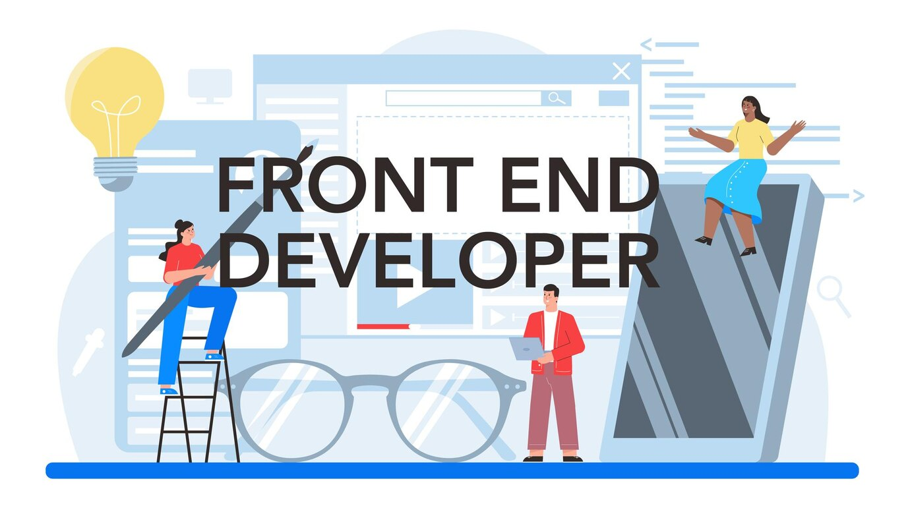
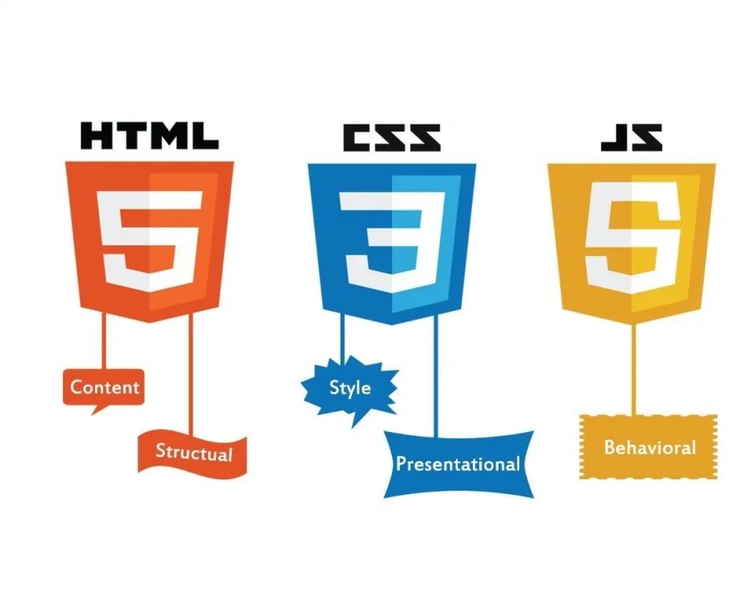
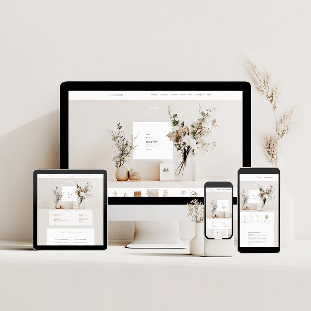

10 Essential Tips for Beginners to Become a Front-End Developer

Front-end development is one of the most exciting fields in tech. It involves building the parts of websites
and
applications that users interact with directly. If you’re passionate about design, love solving problems,
and
want to make an immediate impact on how websites function and look, becoming a front-end developer could be
the
perfect career for you.
Whether you’re just starting out or considering front-end development as a new path, here are 10 essential
tips
to help you get started on your journey and excel as a front-end developer.
1. Start with the Basics: Learn HTML, CSS, and JavaScript

Every front-end developer’s journey starts with learning the core languages of the web:
- HTML (HyperText Markup Language): The foundation of any website, HTML is used to structure the content
(e.g., headings, paragraphs, images) on a webpage.
- CSS (Cascading Style Sheets): CSS controls the presentation and layout of a website, including colors,
fonts, spacing, and responsiveness.
- JavaScript: This programming language is used to add interactivity to your website (e.g., form
validations,
animations, dynamic content).
Focus on mastering these three languages, as they are the building blocks for everything you will do as a
front-end developer.
Tips:
Practice by building small projects like a personal portfolio website or a simple
landing page.
Use free
online resources such as freeCodeCamp or W3Schools to learn the basics.
2. Understand the Importance of Responsive Design

In today’s world, users visit websites on various devices, from smartphones and
tablets to large desktop screens.
As a front-end developer, it’s crucial to create websites that look and work great on any screen size.
Responsive design is the approach of using flexible layouts, media queries, and CSS frameworks to ensure
that
your websites adapt to different devices.
Tips:
Learn how to use media queries to adjust layouts based on screen size.
Get comfortable with popular CSS frameworks like Bootstrap or TailwindCSS to speed up your development
process.
Test your website on multiple devices to ensure it’s truly responsive.
3. Version Control: Learn Git and GitHub
Version control is essential for any developer. Git allows you to track changes in your code, collaborate
with
other developers, and revert back to previous versions of your project if needed.
GitHub is a platform where developers can store their projects and collaborate with others. Many companies
use
GitHub for their development workflows, so getting familiar with it early will give you a competitive edge.
Tips:
Learn how to use basic Git commands like git commit, git push, and git pull.
Create a GitHub account and start uploading your projects to build a portfolio.
Practice working with Git branches to handle new features or bug fixes in your projects.
4. Get Familiar with Browser Developer Tools
Every major web browser (e.g., Chrome, Firefox, Edge) comes with built-in developer tools that allow you to
inspect HTML, modify CSS, debug JavaScript, and monitor performance.
These tools are invaluable for testing and debugging your code, as well as learning how other websites are
built.
Tips:
Open any website and use the Inspect feature to analyze its structure and CSS styles.
Learn how to debug JavaScript errors directly in the browser.
Use performance tools to measure how fast your website loads and look for ways to optimize it.
5. Understand CSS Layouts (Flexbox and Grid)
Layout design is a fundamental aspect of front-end development. CSS layouts have evolved over time, and two
modern approaches—Flexbox and CSS Grid—have become the go-to solutions for creating complex and responsive
designs.
Flexbox: Great for creating one-dimensional layouts (e.g., aligning items in a row or column).
CSS Grid: Perfect for building two-dimensional layouts, like grids with both rows and columns.
Tips:
Practice creating layouts with Flexbox using challenges like Flexbox Froggy.
Build grid-based layouts with CSS Grid using tools like Grid Garden.
Experiment by combining Flexbox and Grid to create advanced and responsive designs.
6. Learn JavaScript Frameworks and Libraries
Once you have a solid understanding of JavaScript, it’s time to explore JavaScript frameworks and libraries
that
can streamline your development workflow.
React: A popular JavaScript library for building user interfaces.
Vue.js: A progressive framework that is beginner-friendly and flexible.
Angular: A full-fledged framework backed by Google, ideal for building larger applications.
These tools help you build dynamic web applications faster by using reusable components and managing the
complexity of larger projects.
Tips:
Start with React as it is widely used and has a large community of resources.
Build a small project like a to-do app using one of these frameworks to get hands-on experience.
7.Learn the Basics of APIs and Asynchronous JavaScript
Front-end developers often need to fetch and display data from external sources, such
as an API (Application
Programming Interface). Understanding how to interact with APIs and handle asynchronous operations in
JavaScript
is key to building modern web applications.
Tips:
Learn how to use fetch() to retrieve data from an API and display it on a web page.
Get comfortable with asynchronous JavaScript concepts like Promises and async/await.
Practice by integrating a public API (e.g., a weather API or a news API) into your project.
8. Practice Coding Regularly
Becoming a great front-end developer requires practice. The more you code, the more comfortable you’ll
become
with solving problems and building real-world projects.
Make coding a daily habit and set small, achievable goals. Whether it’s building a small feature, solving
coding
challenges, or refining your designs, every bit of practice helps you grow.
Tips:
Participate in coding challenges on platforms like Codewars or HackerRank to sharpen your JavaScript skills.
Rebuild popular websites as practice to improve your design and coding skills.
Contribute to open-source projects on GitHub to gain practical experience.
9. Build a Portfolio of Projects
Your portfolio is your ticket to landing a job or freelance work. Start building a
collection of projects that
showcase your skills and creativity. A well-rounded portfolio should demonstrate your ability to build
responsive, functional, and visually appealing websites.
Tips:
Include 3–5 solid projects that demonstrate different skills (e.g., a responsive landing page, a JavaScript
game, or a web app using an API).
Showcase the code behind your projects on GitHub, and make sure your portfolio site itself is a reflection
of
your skills.
Write case studies or blog posts about your projects to show your problem-solving approach
10. Stay Updated and Keep Learning
Front-end development is a fast-evolving field. New tools, frameworks, and best
practices are introduced
regularly. To stay competitive, you need to keep up with industry trends and continuously improve your
skills.
Tips:
Follow front-end development blogs, YouTube channels, and podcasts.
Join online communities like Dev.to, Stack Overflow, and Reddit’s webdev subreddit to stay connected with
other
developers.
Attend online courses and tutorials to learn new tools and technologies as they emerge.
Conclusion
Front-end development is a rewarding and dynamic field, but it requires dedication
and continuous learning. By
mastering the core languages (HTML, CSS, JavaScript), staying updated with modern tools like React and Git,
and
regularly building projects, you’ll be well on your way to becoming a proficient front-end developer.
Start small, practice consistently, and don’t be afraid to make mistakes—every error is an opportunity to
learn!